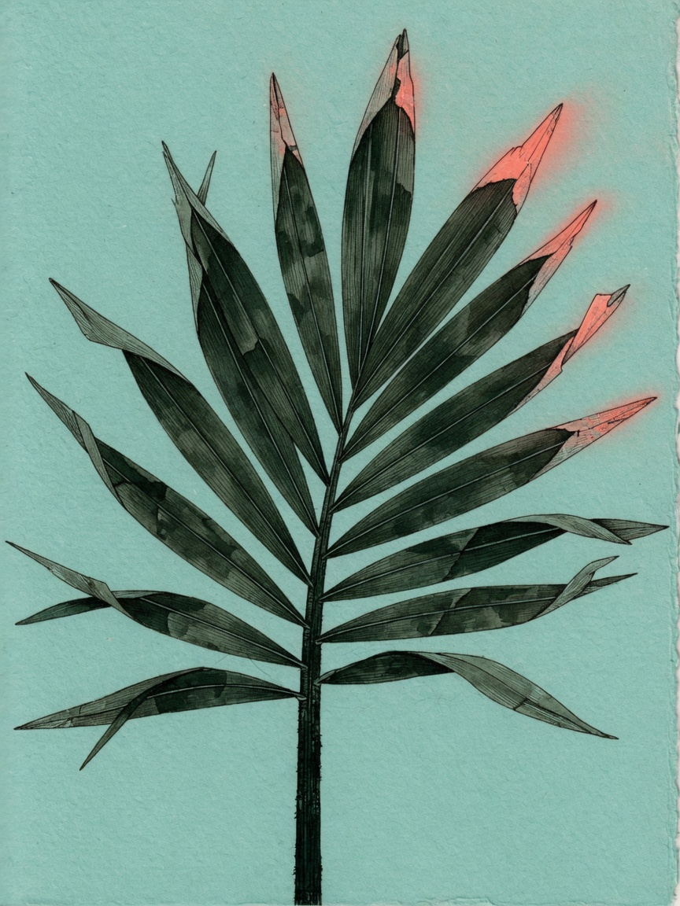

a git-native outliner
olai
An outliner that lives in files you own.
Indent, check off, search. Markdown sits beside the outline. Git records every edit.
nix run github:juspay/olai -- web path/to/outlinesone directory. a browser. that’s the whole install.
Remembered node conversations restore directly into their node. Kolu no longer needs a preflight connection; reported MCP connection problems appear in chat and warning logs. Compact terminal logs show startup timings, chat activity, and why an agent was stopped. Set OLAI_LOG_LEVEL=debug for diagnostics. Logging options.

Compared to Workflowy and Dynalist
Same outlining model — indent, move, mirror, check off. The difference is where the data lives.
| Workflowy, Dynalist | olai | |
|---|---|---|
| Storage | A hosted database | Plain files in a directory you choose |
| Sync | Their cloud | git, or anything that moves files |
| History | In-app version history | git log |
| Search | Keyword, in their app | Filter the page you’re on, or search the whole directory |
| Source | Proprietary | Open source (AGPL-3.0) |
Outlines are ordinary files. The format spec is there if you want it.
What’s due
Dated work from every outline, on one page. Late things sit above today. A birthday isn’t a task — it stays on its day and never turns red. The journal is a default plugin, so deployments that do not need dates can leave the whole calendar and agenda out.
5 days ago · Fri, Aug 7
Kitchen renovation
Today · Wed, Aug 12
Kitchen renovation
Sat, Aug 15in 3 days
Kitchen renovation
two quiet weeks
Fri, Aug 28in 2 weeks
Kitchen renovation
A file named for the day — 2026-08-12.md, anywhere in
the directory — is that day’s note. Open the day and the note is on
top, with everything dated that day underneath it.
Weekly chores come back as a fresh row on the next date, so eleven Mondays are eleven rows, not one row whose date kept moving.
Stay on the page
The box above the outline hides what doesn’t match. A tag you click does the same. The address holds the query, so a narrowed page is a link you can send.
Matches stay where they live. Ancestors stay so a bare title still makes sense.
is:done, date:last-week, a quoted phrase,
OR — the rest of the query language is in the
search docs.
Type like an outliner
Click a title to edit it in place. Enter makes the next line. Tab indents. The rest is the usual outliner muscle memory.
| Enter | commit, and open the next line |
| Enter mid-line | split the row in two, there |
| Backspace at the start | join this row onto the one above |
| Tab / Shift+Tab | indent, or out again |
| Alt+Shift+↑/↓ | move a row among its siblings |
| ⌘+Z | take back your last edit here |
| ⌘+Enter | tick it off, or take that back |
| ⌘+⇧+Enter | walk the mark on: to do, then doing, then none |
| ⌘+⇧+D | duplicate the row, and everything under it |
| ⌘+⇧+M | move it under a node you search for, anywhere |
| Shift+Enter | write the note under it |
| Esc | drop what you were typing |
The full map — dragging, the palette, pins, the inbox — is in the editing docs.
How it looks
Ten palettes. Press a chip — this page follows.
An agent in the same notebook
Chat lives in a side panel. You keep the keyboard. The agent ticks boxes and rewrites the markdown, and you see it happen. Git records both of you. Follow live execution plans and command output, and adjust the agent’s advertised session settings. Choose a model from the chat header, including when chatting with Codex. Olai bundles the Codex adapter and CLI; update olai to receive newer Codex model support.
cabinets.md+3−2
+4 more lines
The page updates because the file on disk changed.
How to point an agent at a running olai is in the chat docs.
Every edit is a commit
Writes go to disk immediately. Commit from the panel when you’re ready — or turn on Auto-commit, and a quiet moment becomes one commit.
┌─ Changes ─────────────────────────────────┐
│ olai: Outlines as a collection done │
│ · chat agent · 12m ago · 1a2b3c4 │
│ │
│ OUTLINES ───────────────────────────── │
│ ☑ roadmap.olai │
│ ✓ Outlines as a collection done │
│ ✎ Notes: one state, same line note │
│ + Kolu integration: auto-… created │
│ │
│ OTHER FILES ────────────────────────── │
│ ☑ README.md modified │
│ ☐ notes/scratch.md untracked │
│ │
│ 2 commits not on origin/master [ Push ] │
│ [ Commit 3 changes · 1 file ] │
└───────────────────────────────────────────┘Commit messages start with olai:, so
git log --grep '^olai' is the trail. The rest is in the
git docs.